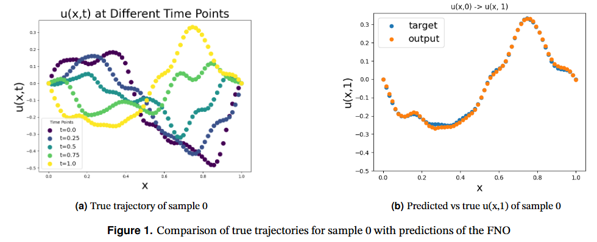
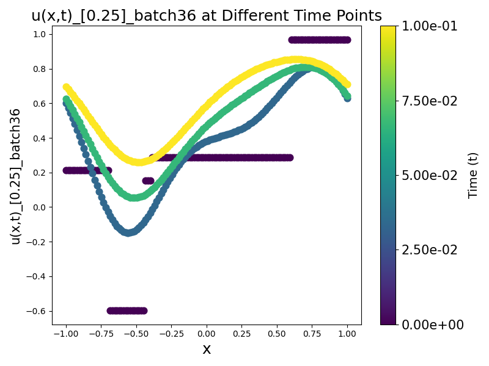

Overview
Final project for the "Artificial Intelligence for Science and Engineering" (AISE) course at ETH Zurich. It has three parts: solving the wave equation with Fourier Neural Operators, discovering unknown PDE terms from data, and modelling phase transitions with the Allen-Cahn equation.
Course
AI for Science and Engineering
Institution
ETH Zurich
Year
2024/2025
The three parts
Fourier Neural Operators
FNOs for the 1D wave equation, using spectral convolutions in Fourier space.
PDE Discovery
Identifying unknown governing equations directly from observational data.
Phase Field Dynamics
Solving the Allen-Cahn equation for phase transitions and interface dynamics.
Part 1 — Fourier Neural Operators
FNOs perform their convolutions in Fourier space, which suits the periodic structure of the wave equation. The model was trained across several spatial resolutions (32–128 grid points) and tested on unseen resolutions and time horizons.

FNO predictions for the 1D wave equation across resolutions and time steps.
Part 2 — PDE Discovery
A gradient-based method identifies which differential terms make up an unknown PDE from data. The terms it can recover include:
Linear Terms
Diffusion Terms
Advection Terms
Nonlinear Terms
Coupled Terms

Gradient computation used to recover the differential terms of an unknown PDE.
Part 3 — Allen-Cahn Phase Field
Allen-Cahn Equation
ε controls the interface width; u is the phase field variable.
The interface width ε spans two orders of magnitude, from sharp to diffuse. Curriculum learning — training on easier (larger ε) cases first — let a single network handle the full range and extrapolate beyond the training time horizon.

Phase field evolution for the Allen-Cahn equation (ε = 0.25), on an out-of-distribution case.
References
Li, Z., et al. (2021)
"Fourier Neural Operator for Parametric Partial Differential Equations"
International Conference on Learning Representations (ICLR)
Raissi, M., et al. (2019)
"Physics-informed neural networks: A deep learning framework for solving forward and inverse problems involving nonlinear partial differential equations"
Journal of Computational Physics
Allen, S. M., & Cahn, J. W. (1979)
"A microscopic theory for antiphase boundary motion and its application to antiphase domain coarsening"
Acta Metallurgica